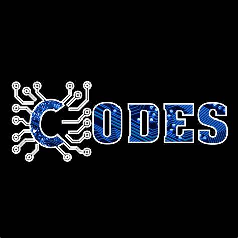
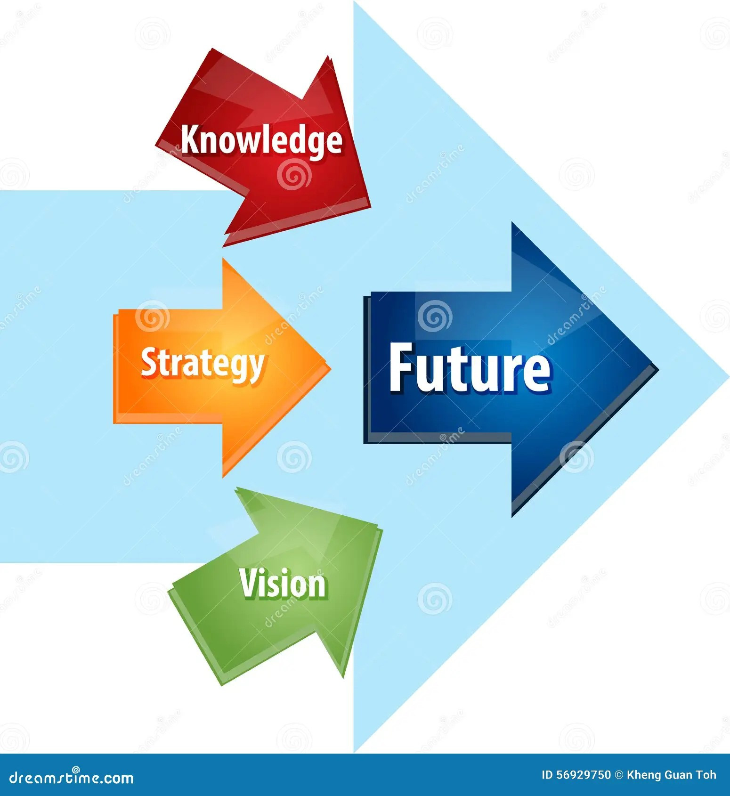

BSC PHYSICAL SCIENCE(HPU/SPU)
MENU
About this Website
This website has been created specifically for BSc Physical students who have enrolled in SPU Mandi and HPU
Shimla. The site provides question papers and notes for computer science students. It was created by a Physical
science student (Rahul Choudhary) studying at Government Arya Degree College Nurpur Kangra under SPU Mandi for
the 2022-25 session. All notes and practice codes are tailored to your curriculum as published by HPU Shimla Read more
Notes are crucial for exam preparation as they condense essential information, making it easier to
review and remember key concepts. Well-organized notes help in quickly revisiting complex topics and
provide a structured outline of the syllabus. Additionally, summarizing information in your own
words aids ...
Important topics are the core areas in any subject that are most likely to appear on exams and are
fundamental to understanding the course. These include foundational concepts, essential formulas,
key case studies, and important diagrams. Focusing on these topics helps streamline revision and
boosts confidence, as they represent the material teachers and textbooks ...
 Program codes are structured sets of instructions written in a programming language to perform
specific tasks. They form the foundation of software, allowing computers to process information,
solve problems, and execute complex functions. Writing clean, efficient code is essential for
developing reliable ...
Extra material refers to additional resources that enhance understanding beyond the main syllabus.
This may include supplementary readings, practice problems, sample tests, and videos, which provide
deeper insights and varied perspectives on topics ...
A question paper is an essential exam tool containing a set of questions designed to assess
students' understanding of a subject. It typically includes various question types, such as
multiple-choice, short-answer, and essay questions, to evaluate knowledge, analytical skills, ...
Future planning after the first year involves setting specific goals based on the experiences and
insights gained so far. This can include selecting a specialization, planning relevant internships,
and building a professional network through events or online platforms ...